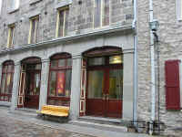
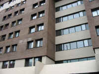
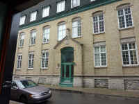
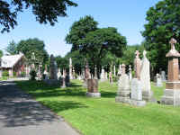
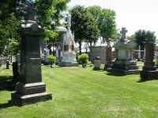
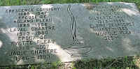

|
PHOTOS DE QUÉBEC, OCTOBRE
2009
|
(
n'oubliez pas de cliquer sur les photos pour mieux les
voir) |
|

|

|
|
Le 21 rue St-Pierre, dans le Vieux-Québec, tout
juste au sud de la Place Royale. est le seul bâtiment qui
a conservé le même numéro et qui ne semble pas avoir
subi de changements majeurs. C'est là que Jean-Baptiste
Thibaudeau, grand-père maternel de Charles Consigny,
avait son commerce de marchand de fruits, à la fin du
19ème siècle.
Quant à sa résidence, au 41 rue Ste-Hélène quartier
St-Roch, c'est maintenant l'E.N.A.P. qu'on retrouve sur
son emplacement.
|
|

|
|

|

|
|
Le 179 rue du Roi n'existe plus.
C'était le logement habité par les parents de Charles
Consigny dans les années 1890, avant que son père
Arsène ne décède. Aujourd'hui on y trouve un édifice
à logements, le 575 du Roi, construit à la fin des
années 1970. |
|
|
|

|

|
|
Par les recensements de 1901 et 1911
nous savons que la grand-mère paternelle de Charles
Consigny, Basilisse Landry, habitait un hospice pour
vieillards, dirigée par des religieuses, sur la rue
St-François. Voici une photo de l'édifice qui semble
le plus plausibe, il est tout près de l'église St-Roch.
Aujourd'hui c'est un édifice à logements. |
|

|
|
CIMETIÈRE
SAINT-CHARLES
(vieille partie, rue Saint-Vallier) |
|
MONUMENT CONSIGNY |
|

|

|
|
Au cimetière Saint-Charles, Nicolas
Consigny, oncle de Charles Consigny, achète ce terrain en
1891 pour sa famille. Sur l'image de droite, le monument
Consigny se trouve au centre. Seuls sont gravés les noms
d'une de ses filles et de sa famille. Mais nous savons que
Nicolas y a fait inhumer sa mère, Basilisse Landry, et ses
deux épouses. Mais pas son père qui est décédé avant
l'achat du terrain. (peut-être n'est-ce pas la pierre tombale
originale?...)
|
|
|
|
MONUMENT THIBAUDEAU |
|

|

Monument Thibaudeau, à gauche
Monument Laliberté, au centre
Monument Paquet, à droite
|
|

|
|
Au cimetière Saint-Charles, Jean-Baptiste
Thibaudeau, marchand renommé, achète un terrain en 1889. Il
est situé près de ceux de marchands très connus de la rue
St-Joseph, Laliberté et Z. Paquet.
Sa fille Amanda, mère de Charles Consigny,
y est inhumée. Quant à l'époux de cette dernière, Arsène Consigny,
et leurs enfants décédés en bas âge, dont le jumeau de
Charles, nous l'ignorons pour l'instant.
|
|
|
|
MONUMENT PLEAU |
|

|

|
|
Au cimetière Saint-Charles, Roland
Pleau, beau-frère de Charles Consigny, a acheté ce
terrain avec un de ses gendres, Laval Chartré. |
|

|
|